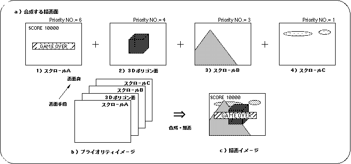
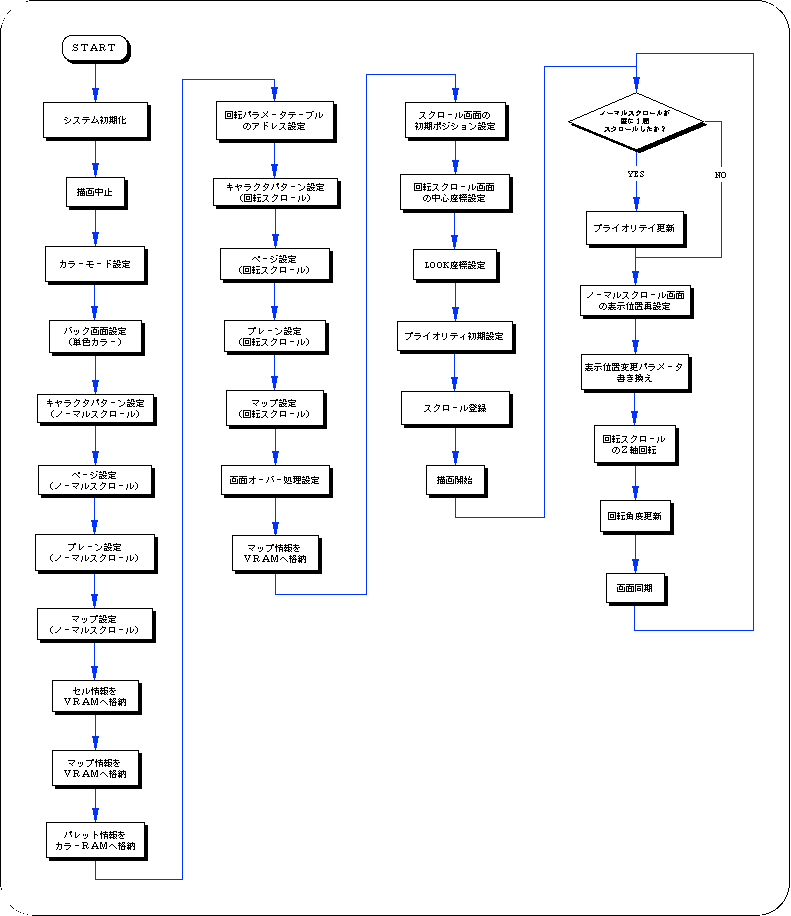

★SGL User's Manual
★PROGRAMMER'S TUTORIAL
★SGL User's Manual
★PROGRAMMER'S TUTORIAL
図8-28 プライオリティイメージ

● プライオリティ番号が等しい場合のプライオリティ ●SPRITE＞RBG0＞NBG0＞NBG1＞NBG2＞NBG3
高い(前面)←−−−−−−−−−−−→低い(背面)
注）POLYGONは、SPRITEに含まれます。
また、ＳＧＬではデフォルト状態で、各描画面に対して次のようにプライオリティを割り振ってあります。
| プライオリティナンバー | ||||||||
|---|---|---|---|---|---|---|---|---|
| ７ | ６ | ５ | ４ | ３ | ２ | １ | ０ | |
| 描 画 面 | NBG0 | SPRITE | SPRITE | RGB0 | NBG1 | NBG2 | NBG3 | 未設定 |
次のサンプルプログラム（リスト8-9）はＳＧＬライブラリ関数“slPriorityNbg0〜3,Rbg0”を実際に使用して、スクロールのプライオリティ処理を実現したものです。
リスト8-9 sample_8_11：スクロールの表示優先
/*----------------------------------------------------------------------*/
/* Scroll Priority Change */
/*----------------------------------------------------------------------*/
#include "sgl.h"
#include "ss_scrol.h"
#define NBG1_CEL_ADR ( VDP2_VRAM_B1 + 0x02000 )
#define NBG1_MAP_ADR ( VDP2_VRAM_B1 + 0x12000 )
#define NBG1_COL_ADR ( VDP2_COLRAM + 0x00200 )
#define RBG0_CEL_ADR VDP2_VRAM_A0
#define RBG0_MAP_ADR VDP2_VRAM_B0
#define RBG0_PAR_ADR ( VDP2_VRAM_A1 + 0x1fe00 )
#define BACK_COL_ADR ( VDP2_VRAM_A1 + 0x1fffe )
void ss_main(void)
{
Uint16 PryNBG = 4 , PryRBG = 1, PryWRK;
FIXED yama_posx = SIPOSX , yama_posy = SIPOSY;
ANGLE ascii_angz = DEGtoANG(0.0);
slInitSystem(TV_320x224,NULL,1);
slTVOff();
slPrint("Sample program 8.11" , slLocate(9,2));
slColRAMMode(CRM16_1024);
slBack1ColSet((void *)BACK_COL_ADR , 0);
slCharNbg1(COL_TYPE_256 , CHAR_SIZE_1x1);
slPageNbg1((void *)NBG1_CEL_ADR , 0 , PNB_1WORD|CN_12BIT);
slPlaneNbg1(PL_SIZE_1x1);
slMapNbg1((void *)NBG1_MAP_ADR , (void *)NBG1_MAP_ADR , (void *)NBG1_MAP_ADR , (void *)NBG1_MAP_ADR);
Cel2VRAM(yama_cel , (void *)NBG1_CEL_ADR , 31808);
Map2VRAM(yama_map , (void *)NBG1_MAP_ADR , 32 , 16 , 1 , 256);
Pal2CRAM(yama_pal , (void *)NBG1_COL_ADR , 256);
slRparaInitSet((void *)RBG0_PAR_ADR);
slCharRbg0(COL_TYPE_256 , CHAR_SIZE_1x1);
slPageRbg0((void *)RBG0_CEL_ADR , 0 , PNB_1WORD|CN_10BIT);
slPlaneRA(PL_SIZE_1x1);
sl1MapRA((void *)RBG0_MAP_ADR);
slOverRA(2);
Map2VRAM(ascii_map ,(void *)RBG0_MAP_ADR , 32 , 4 , 0 , 0);
slScrPosNbg1(yama_posx , yama_posy);
slDispCenterR(toFIXED(160.0) , toFIXED(112.0));
slLookR(toFIXED(128.0) , toFIXED(24.0));
slPriorityNbg1(PryNBG);
slPriorityRbg0(PryRBG);
slScrAutoDisp(NBG0ON | NBG1ON | RBG0ON);
slTVOn();
while( 1 ){
if(yama_posx >= (SX + SIPOSX)) {
PryWRK = PryNBG;
PryNBG = PryRBG;
PryRBG = PryWRK;
slPriorityNbg1(PryNBG);
slPriorityRbg0(PryRBG);
yama_posx = SIPOSX;
}
slScrPosNbg1(yama_posx , yama_posy);
yama_posx += POSX_UP;
slZrotR( ascii_angz );
ascii_angz += DEGtoANG(1.0);
slSynch();
}
}

★SGL User's Manual
★PROGRAMMER'S TUTORIAL